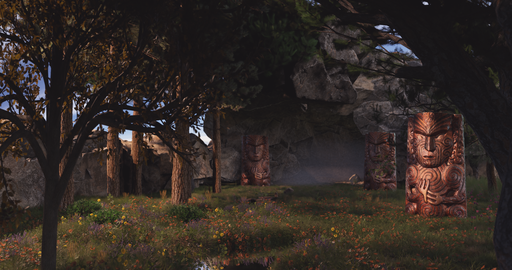

"T" Art
The rich history behind the maori art of the Pasifika people is culturally significant. This art, show on the right, is located in the northern most point of the sunken islands. It is known simple as the "T" amongst the islanders. It is a must see for anyone traveling to the island, they say just being near it gives you great mana that any man would be envious of.